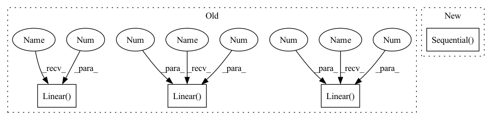

Pattern ID :519

Before Change
def __init__(self):
super(VAE, self).__init__()
self.fc1 = nn.Linear(784, 400)
self.fc21 = nn.Linear(400, 20)
self.fc22 = nn.Linear(400, 20)
self.fc3 = nn.Linear(20, 400)
self.fc4 = nn.Linear(400, 784)
def encode(self, x):
h1 = F.relu(self.fc1(x))
return self.fc21(h1), self.fc22(h1)
After Change
self.sigma = nn.Conv2d(256, 1024, kernel_size=4, bias=False)
self.mu = nn.Conv2d(256, 1024, kernel_size=4, bias=False)
self.decoder = nn.Sequential(
nn.ConvTranspose2d(1024, 256, kernel_size=4, bias=False),
nn.BatchNorm2d(256),
nn.ReLU(inplace=True),
nn.ConvTranspose2d(256, 128, kernel_size=4, stride=2, padding=1, bias=False),
nn.BatchNorm2d(128),
nn.ReLU(inplace=True),
nn.ConvTranspose2d(128, 64, kernel_size=4, stride=2, padding=1, bias=False),
nn.BatchNorm2d(64),
nn.ReLU(inplace=True),
nn.ConvTranspose2d(64, 32, kernel_size=4, stride=2, padding=1, bias=False),
nn.BatchNorm2d(32),
nn.ReLU(inplace=True),
nn.ConvTranspose2d(32, 3, kernel_size=4, stride=2, padding=1, bias=False)
)
self.output = nn.Tanh()
def reparameterize(self, mu, logvar):
In pattern: SUPERPATTERN
Frequency: 3
Non-data size: 4
Instances
Fragment ID: 1281043
Project Name: deeperlearner/pytorch-template
Commit Name: 576d9f329d45ddf4af2b320655eb909c48d5cb34
Time: 2020-11-24
Author: b04202035@g.ntu.edu.tw
File Name: model/VAE.py
Class Name: VAE
Method Name: __init__
Parent Class: nn.Module
Fragment ID: 1281042
Project Name: deeperlearner/pytorch-template
Commit Name: 576d9f329d45ddf4af2b320655eb909c48d5cb34
Time: 2020-11-24
Author: b04202035@g.ntu.edu.tw
File Name: model/VAE.py
Class Name: VAE
Method Name: __init__
Parent Class: nn.Module
Fragment ID: 1280414
Project Name: cbica/gandlf
Commit Name: c1e85a74696e576c03ea9be291ecfe1ba664b1d5
Time: 2021-06-15
Author: sarthak.pati@hotmail.com
File Name: GANDLF/models/pool_test.py
Class Name: POOL_TEST
Method Name: __init__
Parent Class: nn.Module